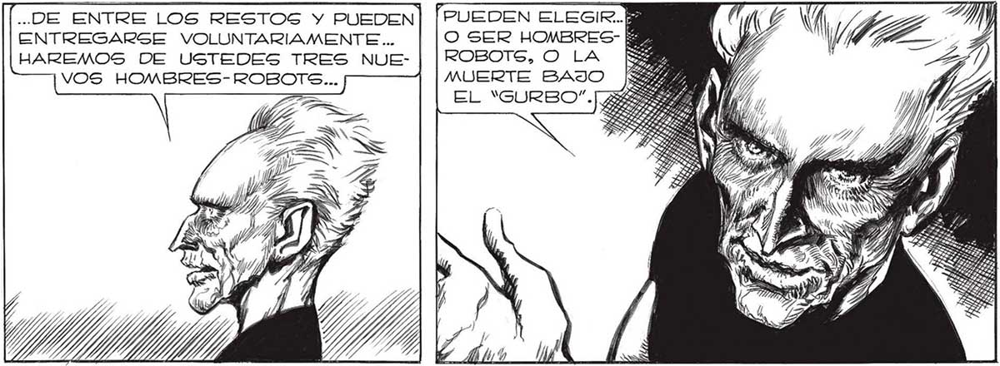
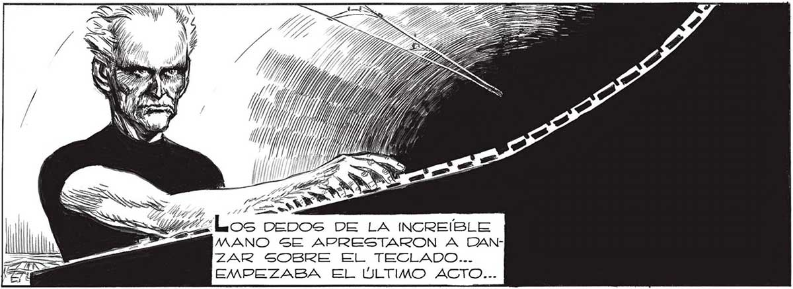

..DE ENTRE LOS RESTOS Y PUEDEN : ENTREGARSE VOLUNTARIAMENTE... O SER HOMBRES k HAREMOS DE USTEDES TRES NUE- | | ROBOTS, O LA VOS HOMBRES-ROBOT<... MUERTE BAJO EL “GURBO” TIENEN USTEDES, HOMBRES, UNA SOLA MN ESPERANZA DE SALVACION...S] NO QUIEREN PE LA ANIQUILACION TOTAL... PUEDEN SALIR ... ¡MATANOS CUANTAS VECES QUIERAS! ¡PERO NO GUEÑES EN HACERNOS HOMBRES-ROBOTS! Pp ¡LO QUE TÚ NO TE ly IMAGINAS ES EL |, HORROR DE Los HOMBRES-ROBOTS! ¡NO, JUAN, NO, ¡YA SABES QUE ES DisearéÉ como ENLOQUECIDO, HASTA QUE NO .% y BALAS. MI RA- E ZON SE EXTRAVIABA DE SOLO PENSAR EN OTRA EXPERIENCIA COMO LA VIVIDA EN EL FABELLON DE MÚSICA DE LAS BARRANCAS DE BELGRANO... Gas =I|COMO QUIERAN, HOMBRES...LES DI —=n (A ELEGIR, Y YA HAN HECHO USTEDES SU ELECCION... / Y > e PA ÍAN Y A 1 MZ LOS DEDOS DE LA INCREÍBLE EMPEZABA EL ÚLTIMO ACTO... 235

